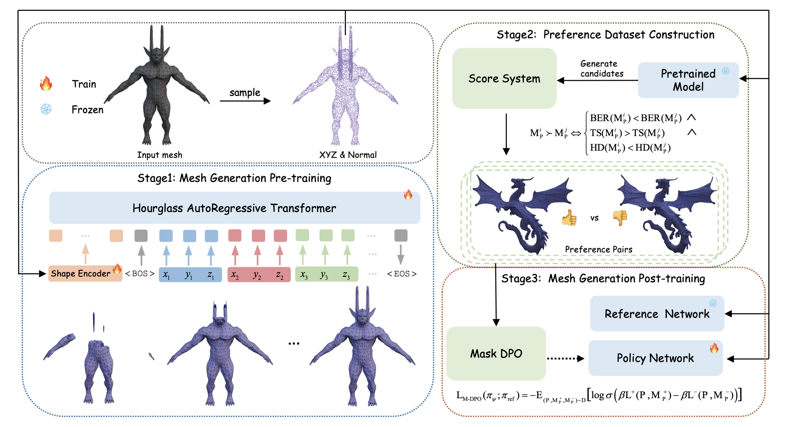

Jingfeng Guo
I am currently a Master’s student at the South China University of Technology supervised by Qi Liu .
My research interest mainly focuses on Computer vision and Generative Models, including Animation (Rigging & Skinning), Generation (AR & Diffusion) and Reconstruction (Neural Fields & 3DGS).
Your browser does not support the video tag.
Auto-Connect: Connectivity-Preserving RigFormer with Direct Preference Optimization
Jingfeng Guo ,
Jian Liu ,
Jinnan Chen ,
Shiwei Mao ,
Changrong Hu ,
Puhua Jiang ,
Junlin Yu ,
Jing Xu
Qi Liu
Lixin Xu ,
Zhuo Chen ,
Chunchao Guo
arxiv , 2025
project page
/
arXiv
Your browser does not support the video tag.

Mesh-RFT: Enhancing Mesh Generation via Fine-grained Reinforcement Fine-Tuning
Jian Liu ,
Jing Xu
Song Guo ,
Jing Li ,
Jingfeng Guo ,
Jiaao Yu ,
Haohan Weng ,
Biwen Lei ,
Xianghui Yang ,
Zhuo Chen ,
Fangqi Zhu ,
Tao Han ,
Chunchao Guo
arxiv , 2025
project page
/
arXiv
GarmentX: Autoregressive Parametric Representations for High-Fidelity 3D Garment Generation
Jingfeng Guo ,
Jinnan Chen ,
Weikai Chen ,
Lanjiong Li ,
Baozhu Zhao ,
Lingting Zhu ,
Xin Wang ,
Qi Liu
arxiv , 2025
arXiv
HumanSkinNet: Automatic Skinning Weight Prediction Network for Human Animation
Jingfeng Guo ,
Qi Liu
arxiv , 2024
AG-NeRF: Attention-guided Neural Radiance Fields for Multi-height Large-scale Outdoor Scene Rendering
Jingfeng Guo ,
Xiaohan Zhang ,
Baozhu Zhao ,
Qi Liu
PRCV , 2024
arXiv
PointCore: Efficient Unsupervised Point Cloud Anomaly Detector Using Local-Global Features
Baozhu Zhao ,
QiweiXiong ,
Xiaohan Zhang ,
Jingfeng Guo ,
Qi Liu
Xiaofen Xing ,
Xiangmin Xu
arxiv , 2024
arXiv
ByteDance Games AIGC
Jul. 2025 - Present, HangZhou, China
Topic: PolyGen and Motion Generation
Tencent Hunyuan3D
Mar. 2025 - Jul. 2025, ShenZhen, China
Topic: Rigging, Skinning and PolyGen
Tencent Lightspeed Studios
Sep. 2024 - Feb. 2025, ShenZhen, China
Topic: 3D Garment Generation
NetEasy Games AI Lab
Mar. 2024 - Aug. 2024, GuangZhou, China
Topic: Universal Human Character Skinning with Components
{kind=link}